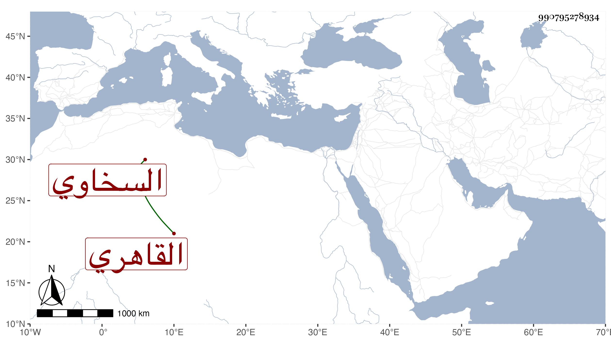

0902Sakhawi.DawLamic.ITO20230111-ara1.EIS1600.990795278934
Biography ID: 990795278934
360
أحمد بن محمد بن عبد الرحمن بن محمد بن أبي بكر بن عثمان الشهاب أبو الفضل السخاوي الأصل القاهري ولدي . ولد في عصر يوم السبت خامس جمادى الأولى سنة خمس وخمسين وثمانمائة بسكننا بالقرب من المنكوتمرية ونشأ في كنف أبويه واجتهدت في الاعتناء به فأحضرته في السنة الأولى من عمره على العلاء القلقشندي وابن الديري والعلم البلقيني والمحلي والزينين شعبان ابن عم شيخنا وابن الشيخ خليل القابوني وخلق وأسمعته الكثير من الكتب الكبار والأجزاء القصار وانتفع الناس في ذلك بمرافقته وأجاز له خلق من الأماكن النائية وغيرها وثبته في مجلد ومشى في زفة حياته خلق فيهم من لم يمش في ذلك قط وكان نجيبا ذكيا بارعا في الجمال محببا إلى الأكابر أتى على معظم القرآن وكتب عني بعض الأمالي وقابل معي كثيرا . مات بالطاعون في ضحى يوم الأحد سادس جمادى الثانية سنة أربع وستين وصلى عليه بجامع الحاكم في مشهد حافل لم يعهد في هذه الأيام نظيره تقدمهم الشافعي ثم دفن بحوش البيبرسية وشيعه خلق أيضا وتأسف الناس عليه ورثاه غير واحد عوضني الله وأمه خيرا فلقد كان من محاسن الأبناء فإنا لله وإنا إليه راجعون .
